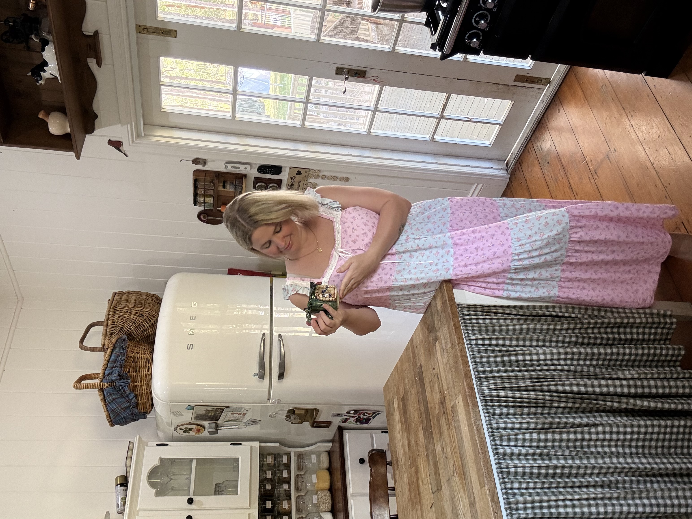

I'm Bonnie — mother of five, wife, and maker. In the pockets of time between school runs and naps, I create one-off pieces from my home pottery studio and sewing caravan. Welcome to my little corner of the world.
Together with my husband Matthew, I've built a slow, peaceful life on a hidden acreage outside Brisbane — low-tox, low-screen, and analog, with nostalgic nods to lost traditions and the quiet art of memory-making. I steal pockets of time from a busy life to create, and to inject a little whimsy into the world. Read more →
I love hearing from fellow makers, collectors, and anyone who finds a piece that speaks to them.
Get in touch